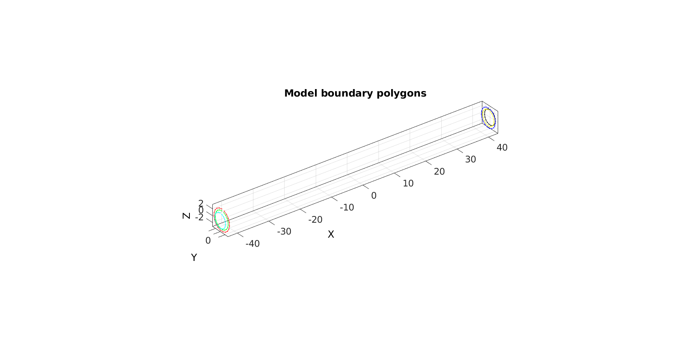
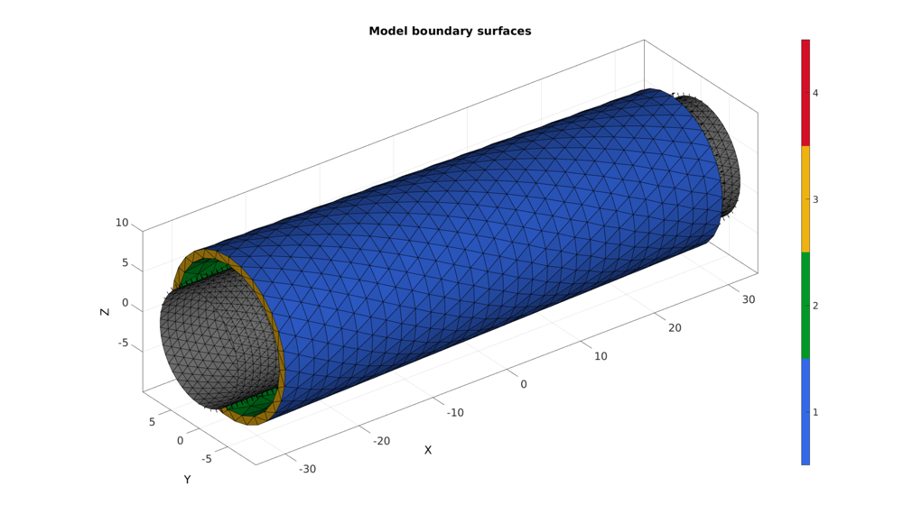
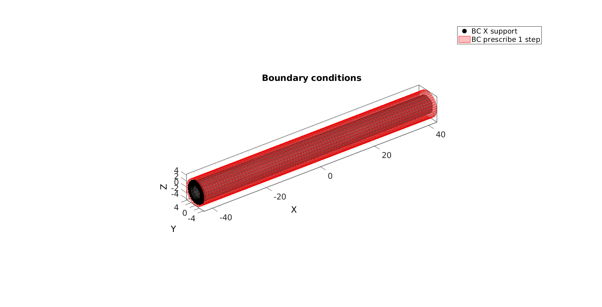
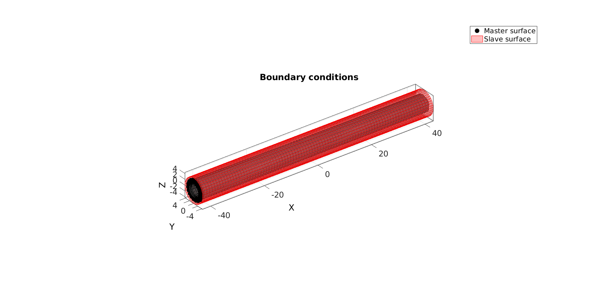
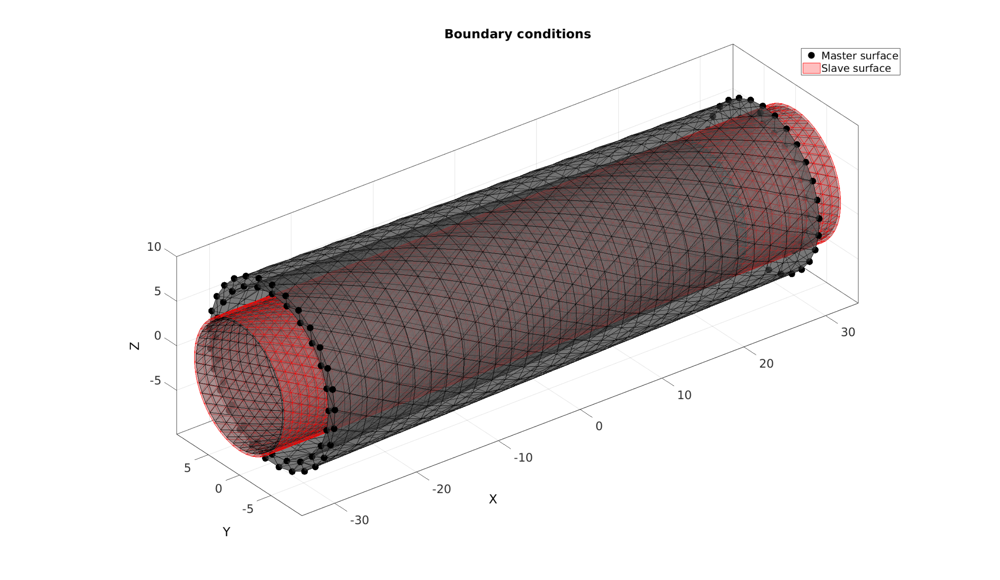
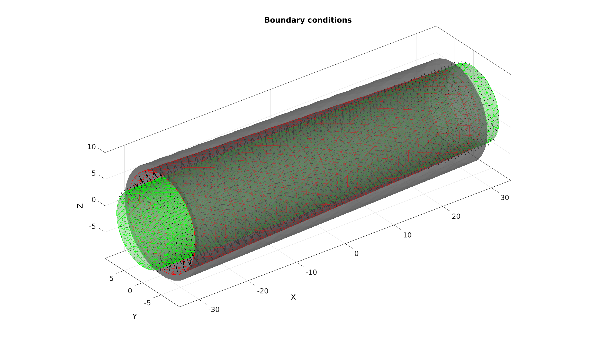
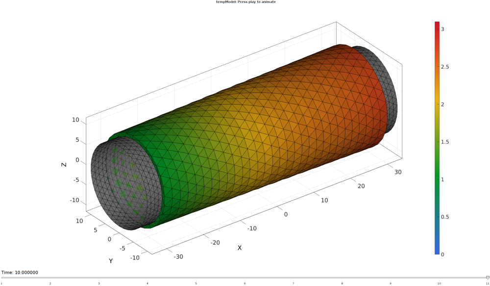

DEMO_febio_0020_vessel_balloon_inflate
Below is a demonstration for:
- Building geometry for a cylindrical vessel with tetrahedral elements
- Defining the boundary conditions
- Coding the febio structure
- Running the model
- Importing and visualizing the displacement results
Contents
- Keywords
- Plot settings
- Control parameters
- Creating model boundary polygons
- Creating model boundary surfaces
- Tetrahedral meshing of vessel
- Joining node sets
- Defining the boundary conditions
- Define contact
- Defining the FEBio input structure
- Quick viewing of the FEBio input file structure
- Exporting the FEBio input file
- Running the FEBio analysis
- Import FEBio results
Keywords
- febio_spec version 2.5
- febio, FEBio
- vessel, cylinder
- prescribed displacement
- contact, sliding
- tetrahedral elements, tet4
- tube, cylindrical
- static, solid, multistep
- hyperelastic, Ogden
- displacement logfile
- stress logfile
clear; close all; clc;
Plot settings
fontSize=20; faceAlpha1=0.8; markerSize=40; lineWidth=3;
Control parameters
% Path names defaultFolder = fileparts(fileparts(mfilename('fullpath'))); savePath=fullfile(defaultFolder,'data','temp'); % Defining file names febioFebFileNamePart='tempModel'; febioFebFileName=fullfile(savePath,[febioFebFileNamePart,'.feb']); %FEB file name febioLogFileName=fullfile(savePath,[febioFebFileNamePart,'.txt']); %FEBio log file name febioLogFileName_disp=[febioFebFileNamePart,'_disp_out.txt']; %Log file name for exporting force febioLogFileName_force=[febioFebFileNamePart,'_force_out.txt']; %Log file name for exporting force %Contact parameters contactInitialOffset=0.1; contactAlg=2; switch contactAlg case 1 contactType='sticky'; case 2 contactType='facet-to-facet sliding'; case 3 contactType='sliding_with_gaps'; case 4 contactType='sliding2'; end %Specifying geometry parameters pointSpacing=2; radiusOuter1=10; radiusInner1=9; radiusOuter2=9; radiusInner2=7; vesselLength=60; nKeep=5; %Number of decimal places used for merging nodes radiusBalloon=min([radiusInner1 radiusInner2])-contactInitialOffset; pointSpacingBalloon=pointSpacing/2; balloonExtraLength=4; %Define applied bc's radialDisplacement=3+contactInitialOffset; %Total radial displacement numSteps=10; %Number of steps %Material parameter set c1=1e-3; %Shear-modulus-like parameter m1=8; %Material parameter setting degree of non-linearity k_factor=10; %Bulk modulus factor k=c1*k_factor; %Bulk modulus % FEA control settings numTimeSteps=1; %Number of time steps desired max_refs=25; %Max reforms max_ups=0; %Set to zero to use full-Newton iterations opt_iter=12; %Optimum number of iterations max_retries=5; %Maximum number of retires dtmin=(1/numTimeSteps)/100; %Minimum time step size dtmax=1/numTimeSteps; %Maximum time step size
Creating model boundary polygons
nRad=round((2*pi*mean([radiusOuter1 radiusOuter2]))/pointSpacing); %Number of radial steps t=linspace(0,2*pi,nRad)'; %Angles t=t(1:end-1); %take away last which equals start v1_Outer=[-(vesselLength/2)*ones(size(t)) radiusOuter1*sin(t) radiusOuter1*cos(t)]; %Circular coordinates t=linspace(0,2*pi,nRad)'; %Angles t=t(1:end-1); %take away last which equals start v2_Outer=[(vesselLength/2)*ones(size(t)) radiusOuter2*sin(t) radiusOuter2*cos(t)]; %Circular coordinates nRad=round((2*pi*mean([radiusInner1 radiusInner2]))/pointSpacing); %Number of radial steps t=linspace(0,2*pi,nRad)'; %Angles t=t(1:end-1); %take away last which equals start v1_Inner=[-(vesselLength/2)*ones(size(t)) radiusInner1*sin(t) radiusInner1*cos(t)]; %Circular coordinates t=linspace(0,2*pi,nRad)'; %Angles t=t(1:end-1); %take away last which equals start v2_Inner=[(vesselLength/2)*ones(size(t)) radiusInner2*sin(t) radiusInner2*cos(t)]; %Circular coordinates nRad=round((2*pi*radiusBalloon)/pointSpacingBalloon); %Number of radial steps t=linspace(0,2*pi,nRad)'; %Angles t=t(1:end-1); %take away last which equals start v1_balloon=[-((vesselLength/2)+balloonExtraLength)*ones(size(t)) radiusBalloon*sin(t) radiusBalloon*cos(t)]; %Circular coordinates v2_balloon=[ ((vesselLength/2)+balloonExtraLength)*ones(size(t)) radiusBalloon*sin(t) radiusBalloon*cos(t)]; %Circular coordinates
Plotting model boundary polygons
cFigure; hold on; title('Model boundary polygons','FontSize',fontSize); plotV(v1_Outer,'r.-') plotV(v1_Inner,'g.-') plotV(v2_Outer,'b.-') plotV(v2_Inner,'y.-') plotV(v1_balloon,'c.-') plotV(v2_balloon,'k.-') axisGeom(gca,fontSize); drawnow;
Creating model boundary surfaces
% controlStructLoft.numSteps=17; controlStructLoft.closeLoopOpt=1; controlStructLoft.patchType='tri'; %Meshing outer surface [F1,V1]=polyLoftLinear(v1_Outer,v2_Outer,controlStructLoft); F1=fliplr(F1); %Invert orientation %Meshing inner surface [F2,V2]=polyLoftLinear(v1_Inner,v2_Inner,controlStructLoft); %Meshing left [F3,V3]=regionTriMesh3D({v1_Outer,v1_Inner},pointSpacing,0,'linear'); F3=fliplr(F3); %Invert orientation %Meshing right [F4,V4]=regionTriMesh3D({v2_Outer,v2_Inner},pointSpacing,0,'linear'); %Merging surface sets [Fv,Vv,Cv]=joinElementSets({F1,F2,F3,F4},{V1,V2,V3,V4}); [Fv,Vv]=mergeVertices(Fv,Vv,nKeep); Fv=fliplr(Fv); %Meshing balloon surface [Fs,Vs]=polyLoftLinear(v1_balloon,v2_balloon,controlStructLoft); Fs=fliplr(Fs); %Invert orientation
Plotting model boundary surfaces
cFigure; hold on; title('Model boundary surfaces','FontSize',fontSize); gpatch(Fv,Vv,Cv); patchNormPlot(Fv,Vv); gpatch(Fs,Vs,'kw'); patchNormPlot(Fs,Vs); colormap(gca,gjet(4)); icolorbar; axisGeom(gca,fontSize); camlight headlight; drawnow;
Tetrahedral meshing of vessel
faceBoundaryMarker=Cv; [V_regions]=getInnerPoint(Fv,Vv); [regionA]=tetVolMeanEst(Fv,Vv); %Volume for regular tets stringOpt='-pq1.2AaY'; inputStruct.stringOpt=stringOpt; inputStruct.Faces=Fv; inputStruct.Nodes=Vv; inputStruct.holePoints=[]; inputStruct.faceBoundaryMarker=faceBoundaryMarker; %Face boundary markers inputStruct.regionPoints=V_regions; %region points inputStruct.regionA=regionA; inputStruct.minRegionMarker=2; %Minimum region marker % Mesh model using tetrahedral elements using tetGen [meshOutput]=runTetGen(inputStruct); %Run tetGen
%%%%%%%%%%%%%%%%%%%%%%%%%%%%%%%%%%%%%%%%%%%%% --- TETGEN Tetrahedral meshing --- 11-May-2018 10:17:12 %%%%%%%%%%%%%%%%%%%%%%%%%%%%%%%%%%%%%%%%%%%%% --- Writing SMESH file --- 11-May-2018 10:17:12 ----> Adding node field ----> Adding facet field ----> Adding holes specification ----> Adding region specification --- Done --- 11-May-2018 10:17:12 --- Running TetGen to mesh input boundary--- 11-May-2018 10:17:12 Opening /mnt/data/MATLAB/GIT/GIBBON/lib_ext/tetGen/tempFiles/temp.smesh. Delaunizing vertices... Delaunay seconds: 0.110969 Creating surface mesh ... Surface mesh seconds: 0.005024 Recovering boundaries... Boundary recovery seconds: 0.009639 Removing exterior tetrahedra ... Spreading region attributes. Exterior tets removal seconds: 0.004248 Recovering Delaunayness... Delaunay recovery seconds: 0.002637 Refining mesh... Refinement seconds: 0.004448 Optimizing mesh... Optimization seconds: 0.00285 Writing /mnt/data/MATLAB/GIT/GIBBON/lib_ext/tetGen/tempFiles/temp.1.node. Writing /mnt/data/MATLAB/GIT/GIBBON/lib_ext/tetGen/tempFiles/temp.1.ele. Writing /mnt/data/MATLAB/GIT/GIBBON/lib_ext/tetGen/tempFiles/temp.1.face. Writing /mnt/data/MATLAB/GIT/GIBBON/lib_ext/tetGen/tempFiles/temp.1.edge. Output seconds: 0.013687 Total running seconds: 0.153712 Statistics: Input points: 1596 Input facets: 3192 Input segments: 4788 Input holes: 0 Input regions: 1 Mesh points: 1596 Mesh tetrahedra: 4620 Mesh faces: 10836 Mesh faces on exterior boundary: 3192 Mesh faces on input facets: 3192 Mesh edges on input segments: 4788 --- Done --- 11-May-2018 10:17:12 %%%%%%%%%%%%%%%%%%%%%%%%%%%%%%%%%%%%%%%%%%%%% --- Importing TetGen files --- 11-May-2018 10:17:12 --- Done --- 11-May-2018 10:17:12
Access model element and patch data
Fb=meshOutput.facesBoundary; Cb=meshOutput.boundaryMarker; V=meshOutput.nodes; CE=meshOutput.elementMaterialID; E=meshOutput.elements;
Visualizing mesh using meshView, see also anim8
meshView(meshOutput,[]);
Joining node sets
Fs=Fs+size(V,1); V=[V;Vs];
Defining the boundary conditions
The visualization of the model boundary shows colors for each side of the cube. These labels can be used to define boundary conditions.
%Define X supported node set bcSupportList_X=unique(Fb(ismember(Cb,[3 4]),:)); %Node set part of selected face % %Define Y supported node set % bcSupportList_Y=unique(Fb(Cb==4,:)); %Node set part of selected face %Radial expansion prescribed displacement bcPrescribeList=(size(V,1)-size(Vs,1)+1):size(V,1); radialDisplacementStep=radialDisplacement/numSteps; %The radial displacement increment for each step [th,r,z] = cart2pol(V(bcPrescribeList,2),V(bcPrescribeList,3),V(bcPrescribeList,1)); r2=r+radialDisplacementStep; V2=V; [V2(bcPrescribeList,2),V2(bcPrescribeList,3),V2(bcPrescribeList,1)] = pol2cart(th,r2,z);
Visualizing boundary conditions. Markers plotted on the semi-transparent model denote the nodes in the various boundary condition lists.
hf=cFigure; title('Boundary conditions','FontSize',fontSize); xlabel('X','FontSize',fontSize); ylabel('Y','FontSize',fontSize); zlabel('Z','FontSize',fontSize); hold on; gpatch(Fb,V,'kw','k',0.5); gpatch(Fs,V,'kw','k',0.5); hl(1)=plotV(V(bcSupportList_X,:),'k.','MarkerSize',markerSize); hl(2)=gpatch(Fs,V2,'rw','r',0.5); legend(hl,{'BC X support','BC prescribe 1 step'}); axisGeom(gca,fontSize); camlight headlight; drawnow;
Define contact
F_contact_master=Fs; F_contact_slave=fliplr(Fb(Cb==2,:));
Visualizing boundary conditions. Markers plotted on the semi-transparent model denote the nodes in the various boundary condition lists.
hf=cFigure; title('Boundary conditions','FontSize',fontSize); xlabel('X','FontSize',fontSize); ylabel('Y','FontSize',fontSize); zlabel('Z','FontSize',fontSize); hold on; gpatch(Fb,V,'kw','none',0.5); h1(1)=gpatch(F_contact_master,V,'gw','g',0.5); patchNormPlot(F_contact_master,V); h1(2)=gpatch(F_contact_slave,V,'rw','r',0.5); patchNormPlot(F_contact_slave,V); legend(hl,{'Master surface','Slave surface'}); axisGeom(gca,fontSize); camlight headlight; drawnow; 
Defining the FEBio input structure
See also febioStructTemplate and febioStruct2xml and the FEBio user manual.
%Get a template with default settings [febio_spec]=febioStructTemplate; %febio_spec version febio_spec.ATTR.version='2.5'; %Module section febio_spec.Module.ATTR.type='solid'; %Create control structure for use by all steps stepStruct.Control.analysis.ATTR.type='static'; stepStruct.Control.time_steps=numTimeSteps; stepStruct.Control.step_size=1/numTimeSteps; stepStruct.Control.time_stepper.dtmin=dtmin; stepStruct.Control.time_stepper.dtmax=dtmax; stepStruct.Control.time_stepper.max_retries=max_retries; stepStruct.Control.time_stepper.opt_iter=opt_iter; stepStruct.Control.max_refs=max_refs; stepStruct.Control.max_ups=max_ups; %Add template based default settings to proposed control section [stepStruct.Control]=structComplete(stepStruct.Control,febio_spec.Control,1); %Complement provided with default if missing %Remove control field (part of template) since step specific control sections are used febio_spec=rmfield(febio_spec,'Control'); %Material section febio_spec.Material.material{1}.ATTR.type='Ogden'; febio_spec.Material.material{1}.ATTR.id=1; febio_spec.Material.material{1}.c1=c1; febio_spec.Material.material{1}.m1=m1; febio_spec.Material.material{1}.c2=c1; febio_spec.Material.material{1}.m2=-m1; febio_spec.Material.material{1}.k=k; febio_spec.Material.material{2}.ATTR.type='Ogden'; febio_spec.Material.material{2}.ATTR.id=2; febio_spec.Material.material{2}.c1=c1; febio_spec.Material.material{2}.m1=m1; febio_spec.Material.material{2}.c2=c1; febio_spec.Material.material{2}.m2=-m1; febio_spec.Material.material{2}.k=k; %Geometry section % -> Nodes febio_spec.Geometry.Nodes{1}.ATTR.name='nodeSet_all'; %The node set name febio_spec.Geometry.Nodes{1}.node.ATTR.id=(1:size(V,1))'; %The node id's febio_spec.Geometry.Nodes{1}.node.VAL=V; %The nodel coordinates % -> Elements febio_spec.Geometry.Elements{1}.ATTR.type='tet4'; %Element type of this set febio_spec.Geometry.Elements{1}.ATTR.mat=1; %material index for this set febio_spec.Geometry.Elements{1}.ATTR.name='Vessel'; %Name of the element set febio_spec.Geometry.Elements{1}.elem.ATTR.id=(1:1:size(E,1))'; %Element id's febio_spec.Geometry.Elements{1}.elem.VAL=E; febio_spec.Geometry.Elements{2}.ATTR.type='tri3'; %Element type of this set febio_spec.Geometry.Elements{2}.ATTR.mat=2; %material index for this set febio_spec.Geometry.Elements{2}.ATTR.name='Balloon'; %Name of the element set febio_spec.Geometry.Elements{2}.elem.ATTR.id=size(E,1)+(1:1:size(Fs,1))'; %Element id's febio_spec.Geometry.Elements{2}.elem.VAL=Fs; % -> NodeSets febio_spec.Geometry.NodeSet{1}.ATTR.name='bcSupportList_X'; febio_spec.Geometry.NodeSet{1}.VAL=bcSupportList_X(:); febio_spec.Geometry.NodeSet{2}.ATTR.name='bcPrescribeList'; febio_spec.Geometry.NodeSet{2}.VAL=bcPrescribeList(:); % -> Surfaces febio_spec.Geometry.Surface{1}.ATTR.name='contact_master'; febio_spec.Geometry.Surface{1}.tri3.ATTR.lid=(1:1:size(F_contact_master,1))'; febio_spec.Geometry.Surface{1}.tri3.VAL=F_contact_master; febio_spec.Geometry.Surface{2}.ATTR.name='contact_slave'; febio_spec.Geometry.Surface{2}.tri3.ATTR.lid=(1:1:size(F_contact_slave,1))'; febio_spec.Geometry.Surface{2}.tri3.VAL=F_contact_slave; % -> Surface pairs febio_spec.Geometry.SurfacePair{1}.ATTR.name='Contact1'; febio_spec.Geometry.SurfacePair{1}.master.ATTR.surface=febio_spec.Geometry.Surface{1}.ATTR.name; febio_spec.Geometry.SurfacePair{1}.slave.ATTR.surface=febio_spec.Geometry.Surface{2}.ATTR.name; %MeshData section febio_spec.MeshData.ElementData{1}.ATTR.var='shell thickness'; febio_spec.MeshData.ElementData{1}.ATTR.elem_set=febio_spec.Geometry.Elements{2}.ATTR.name; febio_spec.MeshData.ElementData{1}.elem.ATTR.lid=(1:size(Fs,1))'; febio_spec.MeshData.ElementData{1}.elem.VAL=0.1*ones(size(Fs)); %Create steps [th,r2,z] = cart2pol(V(bcPrescribeList,2),V(bcPrescribeList,3),V(bcPrescribeList,1)); nodeSetName=febio_spec.Geometry.NodeSet{2}.ATTR.name; febio_spec.MeshData.NodeData=[];%Initialize so we can use end+1 indexing bcNames={'x','y','z'}; V2n=V; V2=V; for q=1:1:numSteps %Step specific control section febio_spec.Step{q}.ATTR.id=q; febio_spec.Step{q}.Control=stepStruct.Control; %Offset coordinates r2=r2+radialDisplacementStep; V2n=V2; [V2n(bcPrescribeList,2),V2n(bcPrescribeList,3),V2n(bcPrescribeList,1)] = pol2cart(th,r2,z); %The current set %Define prescribed displacements bcPrescribeMagnitudesStep=V2n(bcPrescribeList,:)-V2(bcPrescribeList,:); V2=V2n; %Define mesh data and presrived displacements for q_dir=1:1:3 %Loop over coordinates dimensions %Define mesh data for displacement increments c=numel(febio_spec.MeshData.NodeData)+1; %Current step index febio_spec.MeshData.NodeData{c}.ATTR.name=['displacement_',bcNames{q_dir},'_step_',num2str(q)]; febio_spec.MeshData.NodeData{c}.ATTR.node_set=nodeSetName; febio_spec.MeshData.NodeData{c}.node.ATTR.lid=(1:1:numel(bcPrescribeList))'; febio_spec.MeshData.NodeData{c}.node.VAL=bcPrescribeMagnitudesStep(:,q_dir); %Define prescribed displacements febio_spec.Step{q}.Boundary.prescribe{q_dir}.ATTR.bc=bcNames{q_dir}; febio_spec.Step{q}.Boundary.prescribe{q_dir}.ATTR.relative=1; febio_spec.Step{q}.Boundary.prescribe{q_dir}.ATTR.node_set=nodeSetName; febio_spec.Step{q}.Boundary.prescribe{q_dir}.scale.ATTR.lc=1; febio_spec.Step{q}.Boundary.prescribe{q_dir}.scale.VAL=1; febio_spec.Step{q}.Boundary.prescribe{q_dir}.relative=1; febio_spec.Step{q}.Boundary.prescribe{q_dir}.value.ATTR.node_data=febio_spec.MeshData.NodeData{c}.ATTR.name; end end %Boundary condition section % -> Fix boundary conditions febio_spec.Boundary.fix{1}.ATTR.bc='x'; febio_spec.Boundary.fix{1}.ATTR.node_set=febio_spec.Geometry.NodeSet{1}.ATTR.name; % febio_spec.Boundary.fix{2}.ATTR.bc='y'; % febio_spec.Boundary.fix{2}.ATTR.node_set=febio_spec.Geometry.NodeSet{1}.ATTR.name; % febio_spec.Boundary.fix{3}.ATTR.bc='z'; % febio_spec.Boundary.fix{3}.ATTR.node_set=febio_spec.Geometry.NodeSet{1}.ATTR.name; %Contact section switch contactType case 'sticky' febio_spec.Contact.contact{1}.ATTR.surface_pair=febio_spec.Geometry.SurfacePair{1}.ATTR.name; febio_spec.Contact.contact{1}.ATTR.type='sticky'; febio_spec.Contact.contact{1}.penalty=100; febio_spec.Contact.contact{1}.laugon=0; febio_spec.Contact.contact{1}.tolerance=0.1; febio_spec.Contact.contact{1}.minaug=0; febio_spec.Contact.contact{1}.maxaug=10; febio_spec.Contact.contact{1}.snap_tol=0; febio_spec.Contact.contact{1}.max_traction=0; febio_spec.Contact.contact{1}.search_tolerance=0.1; case 'facet-to-facet sliding' febio_spec.Contact.contact{1}.ATTR.surface_pair=febio_spec.Geometry.SurfacePair{1}.ATTR.name; febio_spec.Contact.contact{1}.ATTR.type='facet-to-facet sliding'; febio_spec.Contact.contact{1}.penalty=100; febio_spec.Contact.contact{1}.auto_penalty=1; febio_spec.Contact.contact{1}.two_pass=0; febio_spec.Contact.contact{1}.laugon=0; febio_spec.Contact.contact{1}.tolerance=0.1; febio_spec.Contact.contact{1}.gaptol=0; febio_spec.Contact.contact{1}.minaug=0; febio_spec.Contact.contact{1}.maxaug=10; febio_spec.Contact.contact{1}.search_tol=0.01; febio_spec.Contact.contact{1}.search_radius=pointSpacing/2; case 'sliding_with_gaps' febio_spec.Contact.contact{1}.ATTR.surface_pair=febio_spec.Geometry.SurfacePair{1}.ATTR.name; febio_spec.Contact.contact{1}.ATTR.type='sliding_with_gaps'; febio_spec.Contact.contact{1}.penalty=100; febio_spec.Contact.contact{1}.auto_penalty=1; febio_spec.Contact.contact{1}.two_pass=0; febio_spec.Contact.contact{1}.laugon=0; febio_spec.Contact.contact{1}.tolerance=0.1; febio_spec.Contact.contact{1}.gaptol=0; febio_spec.Contact.contact{1}.minaug=0; febio_spec.Contact.contact{1}.maxaug=10; febio_spec.Contact.contact{1}.fric_coeff=0; febio_spec.Contact.contact{1}.fric_penalty=0; febio_spec.Contact.contact{1}.ktmult=1; febio_spec.Contact.contact{1}.seg_up=0; febio_spec.Contact.contact{1}.search_tol=0.01; case 'sliding2' febio_spec.Contact.contact{1}.ATTR.surface_pair=febio_spec.Geometry.SurfacePair{1}.ATTR.name; febio_spec.Contact.contact{1}.ATTR.type='sliding2'; febio_spec.Contact.contact{1}.penalty=30; febio_spec.Contact.contact{1}.auto_penalty=1; febio_spec.Contact.contact{1}.two_pass=0; febio_spec.Contact.contact{1}.laugon=0; febio_spec.Contact.contact{1}.tolerance=0.1; febio_spec.Contact.contact{1}.gaptol=0; febio_spec.Contact.contact{1}.symmetric_stiffness=0; febio_spec.Contact.contact{1}.search_tol=0.01; febio_spec.Contact.contact{1}.search_radius=pointSpacing/2; end % LoadData section febio_spec.LoadData.loadcurve{1}.ATTR.id=1; febio_spec.LoadData.loadcurve{1}.ATTR.type='linear'; febio_spec.LoadData.loadcurve{1}.point.VAL=[0 0; 1 1; 2 1]; %Output section % -> log file febio_spec.Output.logfile.ATTR.file=febioLogFileName; febio_spec.Output.logfile.node_data{1}.ATTR.file=febioLogFileName_disp; febio_spec.Output.logfile.node_data{1}.ATTR.data='ux;uy;uz'; febio_spec.Output.logfile.node_data{1}.ATTR.delim=','; febio_spec.Output.logfile.node_data{1}.VAL=1:size(V,1); febio_spec.Output.logfile.node_data{2}.ATTR.file=febioLogFileName_force; febio_spec.Output.logfile.node_data{2}.ATTR.data='Rx;Ry;Rz'; febio_spec.Output.logfile.node_data{2}.ATTR.delim=','; febio_spec.Output.logfile.node_data{2}.VAL=1:size(V,1);
Quick viewing of the FEBio input file structure
The febView function can be used to view the xml structure in a MATLAB figure window.
febView(febio_spec); %Viewing the febio file febView(febio_spec)
Exporting the FEBio input file
Exporting the febio_spec structure to an FEBio input file is done using the febioStruct2xml function.
febioStruct2xml(febio_spec,febioFebFileName); %Exporting to file and domNode
Running the FEBio analysis
To run the analysis defined by the created FEBio input file the runMonitorFEBio function is used. The input for this function is a structure defining job settings e.g. the FEBio input file name. The optional output runFlag informs the user if the analysis was run succesfully.
febioAnalysis.run_filename=febioFebFileName; %The input file name febioAnalysis.run_logname=febioLogFileName; %The name for the log file febioAnalysis.disp_on=1; %Display information on the command window febioAnalysis.disp_log_on=1; %Display convergence information in the command window febioAnalysis.runMode='external';%'internal'; febioAnalysis.t_check=0.25; %Time for checking log file (dont set too small) febioAnalysis.maxtpi=1e99; %Max analysis time febioAnalysis.maxLogCheckTime=3; %Max log file checking time [runFlag]=runMonitorFEBio(febioAnalysis);%START FEBio NOW!!!!!!!!
%%%%%%%%%%%%%%%%%%%%%%%%%%%%%%%%%%%%%%%%%%%%% --- STARTING FEBIO JOB --- 11-May-2018 10:17:19 Waiting for log file... Proceeding to check log file...11-May-2018 10:17:20 ------- converged at time : 1 ------- converged at time : 2 ------- converged at time : 3 ------- converged at time : 4 ------- converged at time : 5 ------- converged at time : 6 ------- converged at time : 7 ------- converged at time : 8 ------- converged at time : 9 ------- converged at time : 10 --- Done --- 11-May-2018 10:18:15
Import FEBio results
if runFlag==1 %i.e. a succesful run
% Importing nodal displacements from a log file [time_mat, N_disp_mat,~]=importFEBio_logfile(fullfile(savePath,febioLogFileName_disp)); %Nodal displacements time_mat=[0; time_mat(:)]; %Time N_disp_mat=N_disp_mat(:,2:end,:); sizImport=size(N_disp_mat); sizImport(3)=sizImport(3)+1; N_disp_mat_n=zeros(sizImport); N_disp_mat_n(:,:,2:end)=N_disp_mat; N_disp_mat=N_disp_mat_n; DN=N_disp_mat(:,:,end); DN_magnitude=sqrt(sum(DN(:,3).^2,2)); V_def=V+DN; [CF]=vertexToFaceMeasure(Fb,DN_magnitude);
Plotting the simulated results using anim8 to visualize and animate deformations
% Create basic view and store graphics handle to initiate animation hf=cFigure; %Open figure suptitle([febioFebFileNamePart,': Press play to animate']); hp1=gpatch(Fb,V_def,CF,'k',1); %Add graphics object to animate hp2=gpatch(Fs,V_def,'kw','k',1); %Add graphics object to animate gpatch(Fb,V,0.5*ones(1,3),'none',0.25); %A static graphics object axisGeom(gca,fontSize); colormap(gjet(250)); colorbar; caxis([0 max(DN_magnitude)]); axis([min(V_def(:,1)) max(V_def(:,1)) min(V_def(:,2)) max(V_def(:,2)) min(V_def(:,3)) max(V_def(:,3))]); %Set axis limits statically camlight headlight; % Set up animation features animStruct.Time=time_mat; %The time vector for qt=1:1:size(N_disp_mat,3) %Loop over time increments DN=N_disp_mat(:,:,qt); %Current displacement DN_magnitude=sqrt(sum(DN.^2,2)); %Current displacement magnitude V_def=V+DN; %Current nodal coordinates [CF]=vertexToFaceMeasure(Fb,DN_magnitude); %Current color data to use %Set entries in animation structure animStruct.Handles{qt}=[hp1 hp1 hp2]; %Handles of objects to animate animStruct.Props{qt}={'Vertices','CData','Vertices'}; %Properties of objects to animate animStruct.Set{qt}={V_def,CF,V_def}; %Property values for to set in order to animate end anim8(hf,animStruct); %Initiate animation feature drawnow;
end

GIBBON www.gibboncode.org
Kevin Mattheus Moerman, gibbon.toolbox@gmail.com
GIBBON footer text
License: https://github.com/gibbonCode/GIBBON/blob/master/LICENSE
GIBBON: The Geometry and Image-based Bioengineering add-On. A toolbox for image segmentation, image-based modeling, meshing, and finite element analysis.
Copyright (C) 2018 Kevin Mattheus Moerman
This program is free software: you can redistribute it and/or modify it under the terms of the GNU General Public License as published by the Free Software Foundation, either version 3 of the License, or (at your option) any later version.
This program is distributed in the hope that it will be useful, but WITHOUT ANY WARRANTY; without even the implied warranty of MERCHANTABILITY or FITNESS FOR A PARTICULAR PURPOSE. See the GNU General Public License for more details.
You should have received a copy of the GNU General Public License along with this program. If not, see http://www.gnu.org/licenses/.